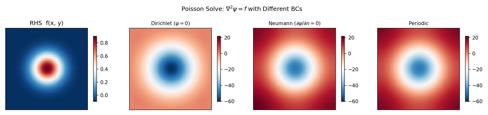

Elliptic Solvers Guide¶
Practical guide for solving Helmholtz, Poisson, and Laplace equations with SpectralDiffX.
The Problem¶
You need to solve an equation of the form:
where nabla^2 is the 2-D Laplacian, lambda >= 0 is a constant, f is a
known source term, and psi is the unknown.
Special cases:
| Name | lambda | Equation | Arises in |
|---|---|---|---|
| Poisson | 0 | nabla^2 psi = f | Streamfunction inversion, pressure correction |
| Helmholtz | > 0 | (nabla^2 - lambda) psi = f | QG PV inversion, implicit diffusion steps |
| Laplace | 0, f = 0 | nabla^2 psi = 0 | Steady-state problems, harmonic functions |
Choosing a Solver¶
Do you have a rectangular domain (no mask)?
|
+-- YES: Use a spectral solver (Layer 0 functions)
| |
| What boundary conditions?
| |
| +-- Dirichlet (psi = 0 on boundary)
| | --> solve_helmholtz_dst / solve_poisson_dst
| |
| +-- Neumann (dpsi/dn = 0 on boundary)
| | --> solve_helmholtz_dct / solve_poisson_dct
| |
| +-- Periodic (domain wraps)
| --> solve_helmholtz_fft / solve_poisson_fft
|
+-- NO: You have a mask (irregular domain)
|
+-- Perimeter < ~1000 points?
| --> Use capacitance solver (see Capacitance Guide)
|
+-- Perimeter too large?
--> Consider iterative solvers (CG in finitevolX)
Poisson vs Helmholtz
The solve_poisson_* functions are convenience wrappers that call
solve_helmholtz_* with lambda_=0.0. If you need a nonzero lambda,
use the Helmholtz functions directly.
Layer 0: Functional API¶
The functional API takes arrays and grid spacings directly. These functions are pure, JIT-compatible, and vmap-friendly.
Dirichlet BCs (DST)¶
The input rhs lives on the interior grid. Boundary values are
implicitly zero (psi = 0 on all four edges).
import jax
import jax.numpy as jnp
from spectraldiffx import solve_poisson_dst, solve_helmholtz_dst
jax.config.update("jax_enable_x64", True)
Ny, Nx = 64, 64
dx, dy = 1.0, 1.0
# Create a source term on the interior grid
j = jnp.arange(Ny)[:, None]
i = jnp.arange(Nx)[None, :]
rhs = jnp.sin(jnp.pi * (j + 1) / (Ny + 1)) * jnp.sin(jnp.pi * (i + 1) / (Nx + 1))
# Poisson: nabla^2 psi = rhs
psi = solve_poisson_dst(rhs, dx, dy)
# Helmholtz: (nabla^2 - 1.0) psi = rhs
psi_helm = solve_helmholtz_dst(rhs, dx, dy, lambda_=1.0)
Neumann BCs (DCT)¶
The grid includes boundary points. The normal derivative is implicitly zero on all four edges.
from spectraldiffx import solve_poisson_dct, solve_helmholtz_dct
# Poisson with Neumann BCs (zero-mean gauge applied automatically)
psi = solve_poisson_dct(rhs, dx, dy)
# Helmholtz with Neumann BCs
psi_helm = solve_helmholtz_dct(rhs, dx, dy, lambda_=1.0)
Periodic BCs (FFT)¶
The domain wraps in both x and y. Uses JAX's built-in FFT for maximum speed.
from spectraldiffx import solve_poisson_fft, solve_helmholtz_fft
# Poisson with periodic BCs (zero-mean gauge applied automatically)
psi = solve_poisson_fft(rhs, dx, dy)
# Helmholtz with periodic BCs
psi_helm = solve_helmholtz_fft(rhs, dx, dy, lambda_=1.0)
1-D Periodic Solvers¶
For 1-D problems on periodic domains:
from spectraldiffx import solve_poisson_fft_1d, solve_helmholtz_fft_1d
x = jnp.sin(jnp.linspace(0, 2 * jnp.pi, 64, endpoint=False))
psi_1d = solve_poisson_fft_1d(x, dx=2 * jnp.pi / 64)
Layer 1: Module Classes¶
Module classes (eqx.Module) store solver configuration and provide a
callable interface. Use them when you solve the same equation type
repeatedly with the same grid parameters.
DirichletHelmholtzSolver2D¶
from spectraldiffx import DirichletHelmholtzSolver2D
# Create solver (stores dx, dy, alpha)
solver = DirichletHelmholtzSolver2D(dx=1.0, dy=1.0, alpha=0.0)
# Call it like a function
psi = solver(rhs) # solves nabla^2 psi = rhs with Dirichlet BCs
NeumannHelmholtzSolver2D¶
from spectraldiffx import NeumannHelmholtzSolver2D
solver = NeumannHelmholtzSolver2D(dx=1.0, dy=1.0, alpha=0.0)
psi = solver(rhs) # solves nabla^2 psi = rhs with Neumann BCs
SpectralHelmholtzSolver2D (Periodic)¶
The periodic solver classes use continuous Fourier wavenumbers (not
finite-difference eigenvalues). They require a FourierGrid2D object:
import jax.numpy as jnp
from spectraldiffx import SpectralHelmholtzSolver2D, FourierGrid2D
grid = FourierGrid2D.from_N_L(Nx=64, Ny=64, Lx=2 * jnp.pi, Ly=2 * jnp.pi)
solver = SpectralHelmholtzSolver2D(grid=grid)
# .solve() method (not __call__)
psi = solver.solve(rhs, alpha=0.0, zero_mean=True)
Layer 0 vs Layer 1 periodic solvers
The Layer 0 functions (solve_helmholtz_fft) use discrete
finite-difference eigenvalues and are exact inverses of the 5-point
stencil Laplacian. The Layer 1 classes (SpectralHelmholtzSolver2D)
use continuous Fourier wavenumbers (-k^2). For most applications
the difference is small, but it matters for convergence studies.
Batched Solves with vmap¶
All Layer 0 solvers are pure functions, so they work with jax.vmap for
batched solves:
import jax
from spectraldiffx import solve_helmholtz_dst
dx, dy = 1.0, 1.0
lambda_ = 0.0
# Batch of 10 right-hand sides: shape [10, Ny, Nx]
rhs_batch = jnp.ones((10, 64, 64))
# vmap over the batch dimension
solve_batch = jax.vmap(lambda rhs: solve_helmholtz_dst(rhs, dx, dy, lambda_))
psi_batch = solve_batch(rhs_batch) # [10, 64, 64]
This compiles to a single fused kernel -- much faster than a Python loop.
The Layer 1 module classes also work with vmap since they are equinox Modules (pure pytrees):
from spectraldiffx import DirichletHelmholtzSolver2D
solver = DirichletHelmholtzSolver2D(dx=1.0, dy=1.0, alpha=0.0)
solve_batch = jax.vmap(solver)
psi_batch = solve_batch(rhs_batch) # [10, 64, 64]
Solver Comparison Table¶
| Function | BC type | Null mode? | Best for |
|---|---|---|---|
solve_helmholtz_dst |
Dirichlet | No (all eigenvalues < 0) | Streamfunction, bounded domains |
solve_poisson_dst |
Dirichlet | No | Poisson on bounded domains |
solve_helmholtz_dct |
Neumann | Yes at (0,0) when lambda=0 | Free-surface, no-flux boundaries |
solve_poisson_dct |
Neumann | Yes (zero-mean gauge) | Neumann Poisson, pressure correction |
solve_helmholtz_fft |
Periodic | Yes at (0,0) when lambda=0 | Doubly-periodic domains |
solve_poisson_fft |
Periodic | Yes (zero-mean gauge) | Periodic Poisson |
solve_helmholtz_fft_1d |
Periodic (1D) | Yes at k=0 when lambda=0 | 1-D periodic problems |
solve_poisson_fft_1d |
Periodic (1D) | Yes (zero-mean gauge) | 1-D periodic Poisson |

Common Pitfalls¶
lambda must be >= 0 for DST well-posedness
The DST solver eigenvalues are all strictly negative. The denominator
eigenvalue - lambda is always nonzero when lambda >= 0, ensuring a
unique solution. Negative lambda could push a denominator toward zero,
causing numerical instability.
Zero-mean gauge for Poisson with Neumann/Periodic BCs
When lambda = 0, the Neumann and periodic Laplacians have a null mode
(constant function). The Poisson equation only has a solution if the
source term f has zero mean. The solvers handle this by setting the
(0,0) spectral coefficient to zero, which implicitly enforces zero-mean
on the solution. If your f does not have zero mean, the solver still
runs but the solution may not satisfy the PDE at the mean level.
Interior grid vs full grid
The DST solver (solve_helmholtz_dst) expects the right-hand side at
interior grid points only. Boundary values (psi = 0) are implicit.
Do not include boundary rows/columns in the input array.
Layer 1 API differences
The Dirichlet and Neumann module classes use __call__ (callable), while
the periodic SpectralHelmholtzSolver2D uses a .solve() method. The
periodic solvers also take alpha (not lambda_) as the Helmholtz
parameter, and the sign convention is (nabla^2 - alpha) with
phi_hat = -f_hat / (k^2 + alpha).